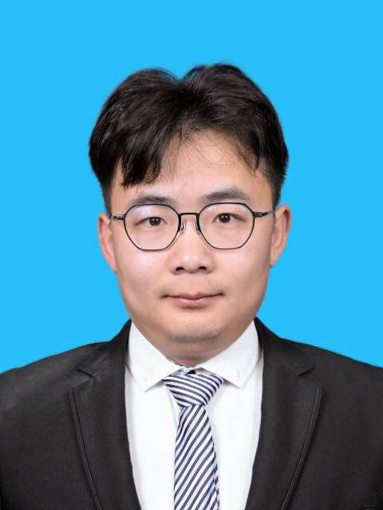

|
Liang Zhang
Ph.D
State Key Laboratory of Grassland Agro-Ecosystem
School of Life Sciences
Lanzhou University
Lanzhou, China. 730000.
Address: Tianshui South Road 222, Lanzhou
Email: liangzhang1996@foxmail.com
|

|
Biography
I am a Ph.D in theoretical ecology at Lanzhou University.
I received my master's degree in Ecology from Lanzhou University in 2021,
and bachelor's degree in Mathematics and Applied Mathematics from Northwestern Polytechnical University in 2018.
Research Interests
My research interests include theoretical ecology, deep learning, and reinforcement learning.
In particular, I am interested in using reinforcement learning to solve a variety of complex problems, including
traffic signal control, plant growth control and plant interactions.
Publications
-
Liang Zhang, Qiang Wu, Jun Shen, et al. Expression might be enough: Representing pressure and demand for reinforcement learning based traffic signal control[C]//International Conference on Machine Learning. PMLR, 2022: 26645-26654.
-
Liang Zhang, Shubin Xie, Jianming Deng. Leveraging queue length and attention mechanisms for enhanced traffic signal control optimization[C]. Joint European Conference on Machine Learning and Knowledge Discovery in Databases. Cham: Springer Nature Switzerland, 2023: 141-156.
-
Liang Zhang, Jianqing Wu, Jun Shen, et al. SATP-GAN: Self-attention based generative adversarial network for traffic flow prediction[J]. Transportmetrica B: Transport Dynamics, 2021, 9(1): 552-568.
-
Liang Zhang, Shubin Xie, Renfei Chen, Jinzhi Ran, Jianming Deng. A novel approach for sampling plant mass-density relationships[J]. Fundamental Research, 2025, ISSN 2667-3258.
Last updated on Oct 31, 2021.